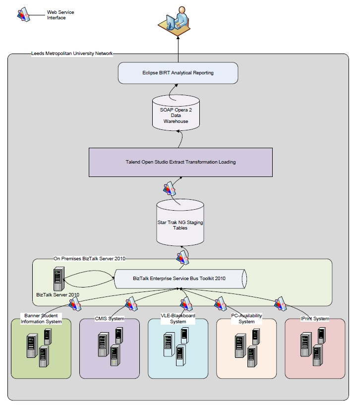

Aggregation of multiple data sets
Aggregation of data from different sources to form useful records requires a common key between
records in order to determine a relationship.
The STAR-Trak project
looked in some detail at the data that it would extract from each source
and produced the
STAR-Trak Data Warehouse Schema which describes each source and the data
that should be used. The diagram below shows the way in which the sources are aggregated using
an enterprise service bus (and then presented to the user).
th
The RISE Project took the approach of using the log files to provide the base layer of data and
then queried other systems to pull in further information to enhance this data. Through a
combination of ISSNs, DOIs and other techniques they are able to add in data such as journal
tiles and article titles.
The SALT Project aggregated their data as follows:
The process begins with data extracted from the Talis library management system (LMS) at JRUL
in CSV format. This data is parsed by a PHP script, which separates the data into two tables in a
MySQL database:
- face="Cambria"The bibliographic details describing an item go into a table called ‘items’.
- face="Cambria"The loan specific data, including borrower ID, goes into a table called ‘loans’.
A further PHP script then processes the data into two additional MySQL tables:
- face="Cambria"‘nloans’ contains the total number of times each item has been borrowed.
- face="Cambria"‘nborrowers’ contains, for each combination of two items, a count of the unique number of library users to have borrowed both items.
Additional processing is performed on demand by the web API:
- face="Cambria"When called for a given item, say item_1, the API returns a list of items for suggested reading, where this list is derived as follows.
- face="Cambria"From the ‘nborrowers’ table a list of items is compiled from all combinations featuring item_1.
- face="Cambria"For each item in this list the number of unique borrowers, from the ‘nborrowers’ table, is divided by the total number of loans for that item, from the ‘nloans’ table, following the logic used by Dave Pattern at the University of Huddersfield.
- face="Cambria"The resulting values are ranked in descending order and the details associated with each suggested item are returned by the API.
The LIDP project aggregated data from a wide variety of sources, varying with what each
participating university was able to provide. This has already been discussed under collecting data for the LIDP project.
Recipes